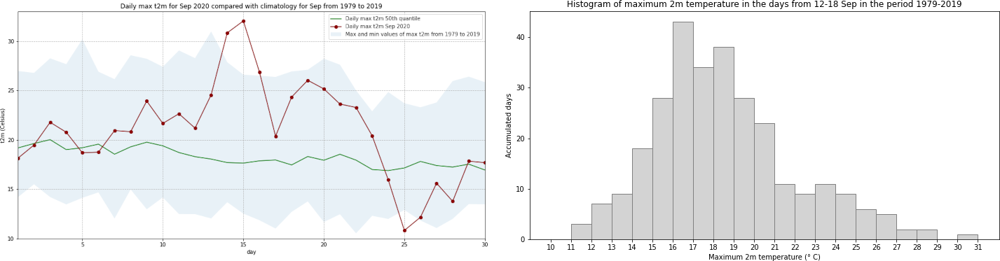
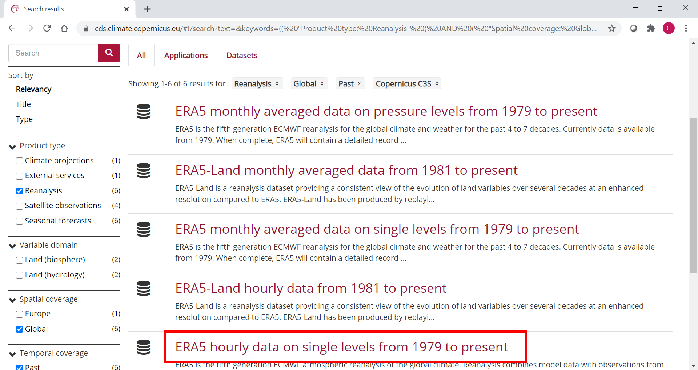
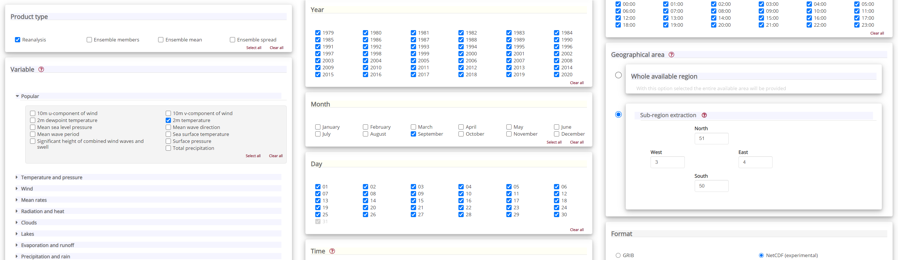

Heatwave analysis
Contents

Heatwave analysis¶
In September 2020, a record-breaking heatwave occured in large parts of western Europe, (see a description here). The city of Lille in northern France for example experienced its hottest day in September 2020 since records began in 1945. In this tutorial we will analyse this event with data from the Climate Data Store (CDS) of the Copernicus Climate Change Service (C3S).
The tutorial comprises the following steps:
Search, download and view data
View daily maximum 2m temperature for September 2020
Compare maximum temperatures with climatology

How to access the notebook¶
This tutorial is in the form of a Jupyter notebook. You will not need to install any software for the training as there are a number of free cloud-based services to create, edit, run and export Jupyter notebooks such as this. Here are some suggestions (simply click on one of the links below to run the notebook):
Binder |
Kaggle |
Colab |
NBViewer |
|---|---|---|---|
|
|
|
|
(Binder may take some time to load, so please be patient!) |
(will need to login/register, and switch on the internet via settings) |
(will need to run the command |
(this will not run the notebook, only render it) |

If you would like to run this notebook in your own environment, we suggest you install Anaconda, which contains most of the libraries you will need. You will also need to install Xarray for working with multidimensional data in netcdf files, and the CDS API (pip install cdsapi) for downloading data programatically from the CDS.
Search, download and view data¶
Before we begin we must prepare our environment. This includes installing the Application Programming Interface (API) of the CDS, and importing the various python libraries that we will need.
Install CDS API¶
To install the CDS API, run the following command. We use an exclamation mark to pass the command to the shell (not to the Python interpreter).
!pip install cdsapi
Requirement already satisfied: cdsapi in c:\users\cxcs\anaconda3\lib\site-packages (0.5.1)
Requirement already satisfied: requests>=2.5.0 in c:\users\cxcs\anaconda3\lib\site-packages (from cdsapi) (2.26.0)
Requirement already satisfied: tqdm in c:\users\cxcs\anaconda3\lib\site-packages (from cdsapi) (4.62.3)
Requirement already satisfied: charset-normalizer~=2.0.0 in c:\users\cxcs\anaconda3\lib\site-packages (from requests>=2.5.0->cdsapi) (2.0.4)
Requirement already satisfied: urllib3<1.27,>=1.21.1 in c:\users\cxcs\anaconda3\lib\site-packages (from requests>=2.5.0->cdsapi) (1.26.7)
Requirement already satisfied: idna<4,>=2.5 in c:\users\cxcs\anaconda3\lib\site-packages (from requests>=2.5.0->cdsapi) (3.2)
Requirement already satisfied: certifi>=2017.4.17 in c:\users\cxcs\anaconda3\lib\site-packages (from requests>=2.5.0->cdsapi) (2021.10.8)
Requirement already satisfied: colorama in c:\users\cxcs\anaconda3\lib\site-packages (from tqdm->cdsapi) (0.4.4)
Import libraries¶
We will be working with data in NetCDF format. To best handle this data we will use libraries for working with multidimensional arrays, in particular Xarray. We will also need libraries for plotting and viewing data, in this case we will use Matplotlib and Cartopy.
# CDS API
import cdsapi
# Libraries for working with multidimensional arrays
import numpy as np
import xarray as xr
# Libraries for plotting and visualising data
import matplotlib.path as mpath
import matplotlib.pyplot as plt
import cartopy.crs as ccrs
from cartopy.mpl.gridliner import LONGITUDE_FORMATTER, LATITUDE_FORMATTER
import cartopy.feature as cfeature
# Disable warnings for data download via API
import urllib3
urllib3.disable_warnings()
Enter your CDS API key¶
We will request data from the Climate Data Store (CDS) programmatically with the help of the CDS API. Let us make use of the option to manually set the CDS API credentials. First, you have to define two variables: URL and KEY which build together your CDS API key. The string of characters that make up your KEY include your personal User ID and CDS API key. To obtain these, first register or login to the CDS (http://cds.climate.copernicus.eu), then visit https://cds.climate.copernicus.eu/api-how-to and copy the string of characters listed after “key:”. Replace the ######### below with this string.
URL = 'https://cds.climate.copernicus.eu/api/v2'
KEY = '##################################'
Here we specify a data directory in which we will download our data and all output files that we will generate:
DATADIR = './'
Search for data¶
To search for data, visit the CDS website: http://cds.climate.copernicus.eu. To facilitate your search you can use keywords, or apply various filters. The data we are going to use in this exercise is the ERA5 reanalysis data on single levels from 1979 to present.


Having selected the correct dataset, we now need to specify what product type, variables, temporal and geographic coverage we are interested in. These can all be selected in the “Download data” tab. In this tab a form appears in which we will select the following parameters to download. We will choose a subset area of 1x1 degrees, corresponding to a region of around 111km North/South and 72km East/West in Belgium and Northern France, around the city of Lille:
Product type:
ReanalysisVariable:
2m temperatureYear:
allMonth:
SeptemberDay:
allTime:
allGeographical area:
North: 51,East: 4,South: 50,West: 3Format:
NetCDF

At the end of the download form, select “Show API request”. This will reveal a block of code, which you can simply copy and paste into a cell of your Jupyter Notebook (see cell below) …
Download data¶
… having copied the API request into the cell below, running this will retrieve and download the data you requested into your local directory. However, before you run the cell below, the terms and conditions of this particular dataset need to have been accepted in the CDS. The option to view and accept these conditions is given at the end of the download form, just above the “Show API request” option.
c = cdsapi.Client(url=URL, key=KEY)
c.retrieve(
'reanalysis-era5-single-levels',
{
'product_type': 'reanalysis',
'format': 'netcdf',
'variable': '2m_temperature',
'year': [
'1979', '1980', '1981',
'1982', '1983', '1984',
'1985', '1986', '1987',
'1988', '1989', '1990',
'1991', '1992', '1993',
'1994', '1995', '1996',
'1997', '1998', '1999',
'2000', '2001', '2002',
'2003', '2004', '2005',
'2006', '2007', '2008',
'2009', '2010', '2011',
'2012', '2013', '2014',
'2015', '2016', '2017',
'2018', '2019', '2020',
],
'month': '09',
'day': [
'01', '02', '03',
'04', '05', '06',
'07', '08', '09',
'10', '11', '12',
'13', '14', '15',
'16', '17', '18',
'19', '20', '21',
'22', '23', '24',
'25', '26', '27',
'28', '29', '30',
],
'time': [
'00:00', '01:00', '02:00',
'03:00', '04:00', '05:00',
'06:00', '07:00', '08:00',
'09:00', '10:00', '11:00',
'12:00', '13:00', '14:00',
'15:00', '16:00', '17:00',
'18:00', '19:00', '20:00',
'21:00', '22:00', '23:00',
],
'area': [
51, 3, 50,
4,
],
},
f'{DATADIR}NFrance_hourly_Sep.nc')
2022-06-08 12:08:38,292 INFO Sending request to https://cds.climate.copernicus.eu/api/v2/resources/reanalysis-era5-single-levels
---------------------------------------------------------------------------
TypeError Traceback (most recent call last)
~\AppData\Local\Temp/ipykernel_5332/3186471413.py in <module>
1 c = cdsapi.Client(url=URL, key=KEY)
----> 2 c.retrieve(
3 'reanalysis-era5-single-levels',
4 {
5 'product_type': 'reanalysis',
~\Anaconda3\lib\site-packages\cdsapi\api.py in retrieve(self, name, request, target)
346
347 def retrieve(self, name, request, target=None):
--> 348 result = self._api("%s/resources/%s" % (self.url, name), request, "POST")
349 if target is not None:
350 result.download(target)
~\Anaconda3\lib\site-packages\cdsapi\api.py in _api(self, url, request, method)
415 action = session.post
416
--> 417 result = self.robust(action)(
418 url, json=request, verify=self.verify, timeout=self.timeout
419 )
~\Anaconda3\lib\site-packages\cdsapi\api.py in wrapped(*args, **kwargs)
604 while tries < self.retry_max:
605 try:
--> 606 r = call(*args, **kwargs)
607 except (
608 requests.exceptions.ConnectionError,
~\Anaconda3\lib\site-packages\requests\sessions.py in post(self, url, data, json, **kwargs)
588 """
589
--> 590 return self.request('POST', url, data=data, json=json, **kwargs)
591
592 def put(self, url, data=None, **kwargs):
~\Anaconda3\lib\site-packages\requests\sessions.py in request(self, method, url, params, data, headers, cookies, files, auth, timeout, allow_redirects, proxies, hooks, stream, verify, cert, json)
526 hooks=hooks,
527 )
--> 528 prep = self.prepare_request(req)
529
530 proxies = proxies or {}
~\Anaconda3\lib\site-packages\requests\sessions.py in prepare_request(self, request)
454
455 p = PreparedRequest()
--> 456 p.prepare(
457 method=request.method.upper(),
458 url=request.url,
~\Anaconda3\lib\site-packages\requests\models.py in prepare(self, method, url, headers, files, data, params, auth, cookies, hooks, json)
318 self.prepare_cookies(cookies)
319 self.prepare_body(data, files, json)
--> 320 self.prepare_auth(auth, url)
321
322 # Note that prepare_auth must be last to enable authentication schemes
~\Anaconda3\lib\site-packages\requests\models.py in prepare_auth(self, auth, url)
554
555 # Allow auth to make its changes.
--> 556 r = auth(self)
557
558 # Update self to reflect the auth changes.
TypeError: 'tuple' object is not callable
Inspect Data¶
We have requested the data in NetCDF format. This is a commonly used format for array-oriented scientific data. To read and process this data we will make use of the Xarray library. Xarray is an open source project and Python package that makes working with labelled multi-dimensional arrays simple and efficient. We will read the data from our NetCDF file into an xarray.Dataset.
filename = f'{DATADIR}NFrance_hourly_Sep.nc'
# Create Xarray Dataset
ds = xr.open_dataset(filename)
Now we can query our newly created Xarray dataset …
ds
<xarray.Dataset>
Dimensions: (longitude: 5, latitude: 5, time: 30240)
Coordinates:
* longitude (longitude) float32 3.0 3.25 3.5 3.75 4.0
* latitude (latitude) float32 51.0 50.75 50.5 50.25 50.0
* time (time) datetime64[ns] 1979-09-01 ... 2020-09-30T23:00:00
Data variables:
t2m (time, latitude, longitude) float32 ...
Attributes:
Conventions: CF-1.6
history: 2022-02-03 09:10:11 GMT by grib_to_netcdf-2.23.0: /opt/ecmw...We see that the dataset has one variable called “t2m”, which stands for “2 metre temperature”, and three coordinates of longitude, latitude and time.
Select the icons to the right of the table above to expand the attributes of the coordinates and data variables. What are the units of the temperature data?
While an Xarray dataset may contain multiple variables, an Xarray data array holds a single variable (which may still be multi-dimensional) and its coordinates. To make the processing of the t2m data easier, we convert in into an Xarray data array:
da = ds['t2m']
Let’s convert the units of the 2m temperature data from Kelvin to degrees Celsius. The formula for this is simple: degrees Celsius = Kelvin - 273.15
t2m_C = da - 273.15
View daily maximum 2m temperature for September 2020¶
As a next step, let us visualize the daily maximum 2m air temperature for September 2020. From the graph, we should be able to identify which day in September was hottest in the area around Lille.
First we average over the subset area:
Note: The size covered by each data point varies as a function of latitude. We need to take this into account when averaging. One way to do this is to use the cosine of the latitude as a proxy for the varying sizes.
weights = np.cos(np.deg2rad(t2m_C.latitude))
weights.name = "weights"
t2m_C_weighted = t2m_C.weighted(weights)
Lille_t2m = t2m_C_weighted.mean(["longitude", "latitude"])
Now we select only the data for 2020:
Lille_2020 = Lille_t2m.sel(time='2020')
We can now calculate the max daily 2m temperature for each day in September 2020:
Lille_2020_max = Lille_2020.groupby('time.day').max('time')
Let’s plot the results in a chart:
fig, ax = plt.subplots(1, 1, figsize = (12, 6))
ax.plot(Lille_2020_max.day, Lille_2020_max)
ax.set_title('Max daily t2m for Sep 2020 in Lille region')
ax.set_ylabel('° C')
ax.set_xlabel('day')
ax.grid(linestyle='--')
for i,j in zip(Lille_2020_max.day, np.around(Lille_2020_max.values, 0).astype(int)):
ax.annotate(str(j),xy=(i,j))

print('The maximum temperature in September 2020 in this area was',
np.around(Lille_2020_max.max().values, 1), 'degrees Celsius.')
The maximum temperature in September 2020 in this area was 32.1 degrees Celsius.
Which day in September had the highest maximum temperature?
Is this typical for Northern France? How does this compare with the long term average? We will seek to answer these questions in the next section.
Compare maximum temperatures with climatology¶
We will now seek to discover just how high the temperature for Lille in mid September 2020 was when compared with typical values exptected in this region at this time of year. To do that we will calculate the climatology of maximum daily 2m temperature for each day in September for the period of 1979 to 2019, and compare these with our values for 2020.
First we select all data prior to 2020:
Lille_past = Lille_t2m.loc['1979':'2019']
Now we calculate the climatology for this data, i.e. the average values for each of the days in September for a period of several decades (from 1979 to 2019).
To do this, we first have to extract the maximum daily value for each day in the time series:
Lille_max = Lille_past.resample(time='D').max().dropna('time')
We will then calculate various quantiles of the maximum daily 2m temperatures for the 40 year time series for each day in September:
Lille_max_max = Lille_max.groupby('time.day').max()
Lille_max_min = Lille_max.groupby('time.day').min()
Lille_max_mid = Lille_max.groupby('time.day').quantile(0.5)
Let’s plot this data. We will plot the, maximum, minimum and 50th quantile of the maximum daily temperature to have an idea of the expected range in this part of France in September, and compare this range with the values for 2020:
fig = plt.figure(figsize=(16,8))
ax = plt.subplot()
ax.plot(Lille_2020_max.day, Lille_max_mid, color='green', label='Daily max t2m 50th quantile')
ax.plot(Lille_2020_max.day, Lille_2020_max, 'bo-', color='darkred', label='Daily max t2m Sep 2020')
ax.fill_between(Lille_2020_max.day, Lille_max_max, Lille_max_min, alpha=0.1,
label='Max and min values of max t2m from 1979 to 2019')
ax.set_xlim(1,30)
ax.set_ylim(10,33)
ax.set_title('Daily max t2m for Sep 2020 compared with climatology for Sep from 1979 to 2019')
ax.set_ylabel('t2m (Celsius)')
ax.set_xlabel('day')
handles, labels = ax.get_legend_handles_labels()
ax.legend(handles, labels)
ax.grid(linestyle='--')
fig.savefig(f'{DATADIR}Max_t2m_clim_Sep_Lille.png')
C:\Users\cxcs\AppData\Local\Temp/ipykernel_5360/21074062.py:5: UserWarning: color is redundantly defined by the 'color' keyword argument and the fmt string "bo-" (-> color='b'). The keyword argument will take precedence.
ax.plot(Lille_2020_max.day, Lille_2020_max, 'bo-', color='darkred', label='Daily max t2m Sep 2020')

Interestingly, we see from this plot that while the temperatures from 14 to 16 Sep 2020 were the highest in the ERA5 dataset, on 25 September 2020, the lowest of the maximum temperatures was recorded for this dataset.
We will now look more closely at the probability distribution of maximum temperatures for 15 September in this time period. To do this, we will first select only the max daily temperature for 15 September, for each year in the time series:
Lille_max = Lille_max.dropna('time', how='all')
Lille_15 = Lille_max[14::30]
We will then plot the histogram of this:
Lille_15.plot.hist()
(array([ 2., 3., 11., 6., 7., 5., 1., 2., 3., 1.]),
array([12.54313564, 13.95039225, 15.35764885, 16.76490545, 18.17216206,
19.57941866, 20.98667526, 22.39393187, 23.80118847, 25.20844507,
26.61570168]),
<BarContainer object of 10 artists>)

Look at the range of maximum temperatures for 15 September in the period from 1979 to 2019. Has the temperature in this period ever exceeded that of 15 September 2020?
The histogram shows the distribution of maximum temperature of one day in each year of the time series, which corresponds to 41 samples. In order to increase the number of samples, let’s plot the histogram of maximum temperatures on 15 September, plus or minus three days. This would increase our number of samples by a factor of seven.
To do this, we first need to produce an index that takes the maximum 2m air temperature values from 12 to 18 September (15 September +/- three days) from every year in the time series. The first step is to initiate three numpy arrays:
years: with the number of years [0:40]days_in_sep: index values of day range [11:17]index: empty numpy array with 287 (41 years * 7) entries
years = np.arange(41)
days_in_sep = np.arange(11,18)
index = np.zeros(287)
In a next step, we then loop through each entry of the years array and fill the empty index array year by year with the correct indices of the day ranges for each year. The resulting array contains the index values of interest.
for i in years:
index[i*7:(i*7)+7] = days_in_sep + (i*30)
index = index.astype(int)
We then apply this index to filter the array of max daily temperature from 1979 to 2019. The resulting object is an array of values representing the maximum 2m air temperature in Lille between 12 and 18 September for each year from 1979 to 2019:
Lille_7days = Lille_max.values[index]
Now we can plot the histogram of maximum daily temperatures in the days 12-18 September from 1979-2019:
fig, ax = plt.subplots(1, 1, figsize = (12, 6))
ax.hist(Lille_7days, bins = np.arange(10,32,1), color='lightgrey', ec='grey')
ax.set_title('Histogram of maximum 2m temperature in the days from 12-18 Sep in the period 1979-2019')
ax.set_xticks(np.arange(10,32,1))
ax.set_ylabel('Accumulated days')
ax.set_xlabel('Maximum 2m temperature (° C)')
fig.savefig(f'{DATADIR}Hist_max_t2m_mid-Sep_1979-2019.png')

In the histogram above, you see that even if we take an increased sample covering a wider temporal range, the maximum daily temperature still never reached that of 15 September 2020. To increase the sample even further, you could include data from a longer time period. The C3S reanalysis dataset now extends back to 1950 and is accessible here ERA5 hourly data on single levels from 1950 to 1978 (preliminary version).